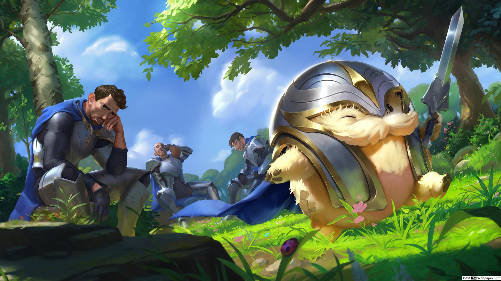

Ogni donazione servira' a salvare altre tipologie di animali in sofferenza.
Poro

Descrizione:
Questo piccolo poro è scivolato dalle montagne del Freljord a Demacia
e i soldati demaciani che inizialente lo accolsero si sono accorti che
richiede troppe attenzioni, donagli una casa al più presto
Donazione necessaria:
100€
Felyne
Descrizione:
È stato licenziato dal suo padrone precedente perchè le sue
abilità non erano più richieste, ma resta pur sempre un ottimo cuoco!
Donazione necessaria:
500€
Almiraj
Descrizione:
Un Almiraj somiglia a un grande coniglio o lepre con pelo
giallastro e un corno a spirale lungo circa 30 centimetri,
solitamente di colore nero posto sulla fronte come gli unicorni.
Sono animali timidi e stupidi, di conseguenza agiscono spesso in
maniera inaspettata ma sono anche facili da addestrare e
rimangono fedeli al proprio padrone.
Donazione necessaria:
50€
Chocobo
Descrizione:
Vi siete stufati dei cavalli ma la voglia di utilizzare
un animale come se fosse un motorino non vi è passata?!
PERFETTO!
Questi grossi pennuti gialli fanno al caso vostro!
Intelligenti, simpatici e veloci stringeranno un forte
legame con voi se riuscirete a farli sentire a proprio agio.
Donazione necessaria:
600€
Snaso
Descrizione
Gli Snasi hanno un manto di soffice, ricciola e nera pelliccia,
con un muso allungato (simile a quello di papere) e artigli anteriori
piatti che gli consentono di afferrare gli oggetti e di scavare con molta facilità.
Hanno dimensioni che ricordano quelle di un porcellino d'India.
La loro cucciolata varia dai sei agli otto piccoli.
Donazione necessaria:
280€
Cucciolo di drago
Descrizione
Dona una casa a un Cucciolo di drago. Crescilo e Addestralo per poterlo cavalcare e diventare un Signore dei Draghi. (Ci dissociamo da ogni forma di violenza causata dal cucciolo.)
Donazione necessaria:
3000€
Pegaso
Descrizione
È il più famoso dei cavalli alati. Secondo il mito, nacque dal terreno bagnato dal sangue versato quando Perseo tagliò il collo di Medusa. Secondo un'altra versione, Pegaso sarebbe balzato direttamente fuori dal collo tagliato del mostro, insieme a Crisaore
Donazione necessaria:
2500€
Occamy
Descrizione
Un piccolo serpente alato. ATTENZIONE! Tende ad occupare tutto lo spazio circostante
Donazione necessaria:
1000€
Pseudodrago
Descrizione
Questo piccolo drago possiede un pungiglione velenoso sulla punta della coda e
raggiunge le di mensioni di un cane di mezza grandezza,
aiuta il propietario nello studio e si comporta in maniera simile ai gatti
Donazione necessaria:
3000€
Cerbero
Descrizione
Si, può diventare pericoloso ma è un bellissimo
cane a 3 teste, come si fa a dirgli di no?!
Donazione necessaria:
1000€
Flerken
Descrizione
Stufi di un semplice gatto? Adotta un Flerken, creature dotate di incredibili poteri: a differenza dei felini depositano uova, e sono dotati di zanne molto aguzze e tentacoli che permettono loro di fare a pezzi in pochi secondi qualsiasi preda.
Donazione necessaria:
5000€
Fenice
Descrizione
Questo sacro uccello fatto di fuoco diversamente dagli altri animali non
vi darà problrmi quando tirerà le quoia, perche diversamente da
qualsiasi altro animale la fenice risorgerà in un ciclo eterno.
(se vi stufate della sua longevità non esitate a contattarci,
potrete restituirla ma ovviamente non avrete i soldi della donazione indietro)
Donazione necessaria:
5000€
Prinny
Descrizione
Sono bambole di pezza a forma di pinguino alla quale i demoni danno vita
per utilizzarle come servi, hanno 2 bastoncini al posto
delle gambe e se vengono urtati troppo forte o cascano per terra esplodono.
I demoni ce ne hanno speditoi qualche centinaia per vederli soffrire nelle
case degli umani, sii gentile con loro
Donazione necessaria:
5€
Chimera
Descrizione
Questo cucciolo di chimera ha una testa di drago, una di leone e
una di capra, può crescere e diventare pericolosa,
si raccomanda d'unque di avere un grande giardino, bestiame fresco
e un ampio spazio dove farla volare.
Donazione necessaria:
5000€
Gatto alato
Descrizione
Un simpatico micio con delle splendide ali da gufo, il suo ex
proprietario non lo voleva perchè dice che oltre i mobili sporca anche il soffitto.